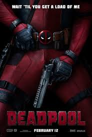

Noam Kleinman is an amateur movie reviewer at the University of Georgia. Although it is not his major or preferred career he is very passionate about the film industry and the various works of art that are produced. In high school, he took multiple film classes and passed the state of Georgia’s film career technology pathway test. He hopes to use his analysis skills to write wholesome and informative movie reviews that will impact the masses decisions to watch various films.
Which movie is your favorite?
Deadpool Review:
Deadpool is a delightful film that perfectly balances the nihilism found in the world of a sadistic cancer patient, and the comedy involved with knowing that you can’t be killed by ordinary means. The R rating is very appropriate based on the amount of cursing, violence, and sexual acts in the movie. They are never overused though, since they play in with the characters developments in order to portray their various motives and how they tie in with the plots.
The Dark Knight Review:
The Dark Knight is a very gritty film for a superhero movie. It has won many awards for an incredible performance by Heath Ledger as the Joker and also is known as a movie that evokes deep thought for its philosophical ideals portrayed by the storyline and actors. With an amazing cast and a fantastic director, it’s not a surprise that this movie is ranked as one of the best films of all time.
Finding Nemo Review:
Finding Nemo is a well-crafted story of searching for a lost child, but it lacks certain motivations of characters. While the characters are jaunty and comedic, their backstories are poorly thought out and shallow which makes for a less compelling story. There is a certain sense of adventure that accompanies the plot, and the humor is very well done throughout, yet the movie still leaves one unsatisfied.
Up Review:
Up has one of the saddest and most thought out backstories of love and redemption, yet fails to deliver with the remainder of the storyline. It starts out very deep and touching, but quickly develops into a much lighter film that goes with it being a movie geared towards kids. Although the motivations of characters flesh out as the story continues, there are still many holes in the plot that leave questions unanswered.
The Princess Bride Review:
The Princess Bride is quite possibly one of the best movies ever made. Rob Reiner directs the movie with a beautiful precision that creates an incredible world that stays true to the original book. Each of the actors fits their roles perfectly and they mesh well together in order to portray a true story of adventure, love, fights, betrayal, and romance. Every scene compels the story further as characters discover more about themselves and their feelings for friendship and love.